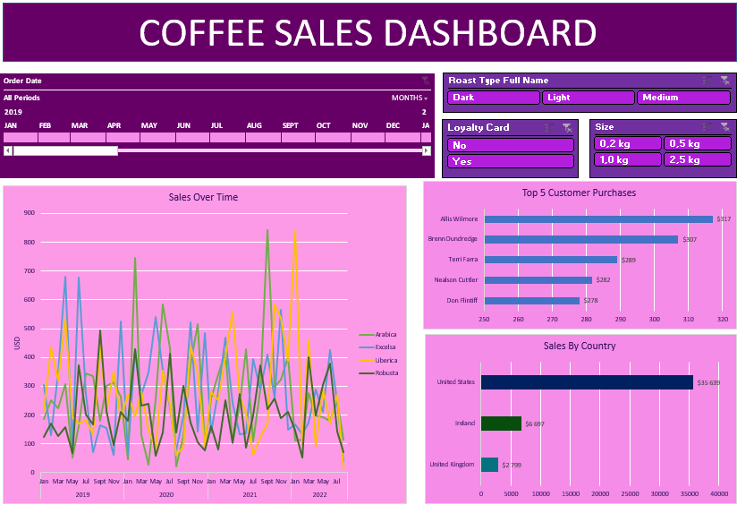
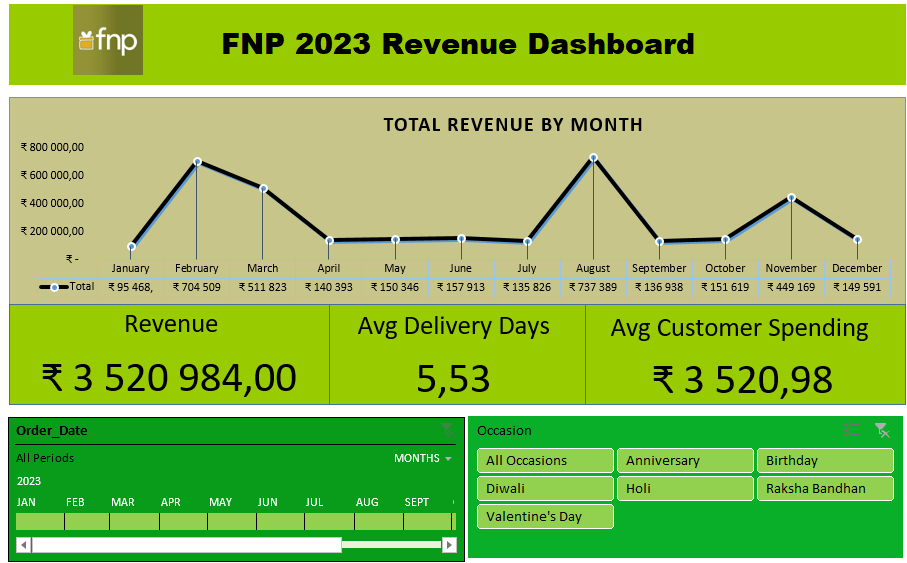
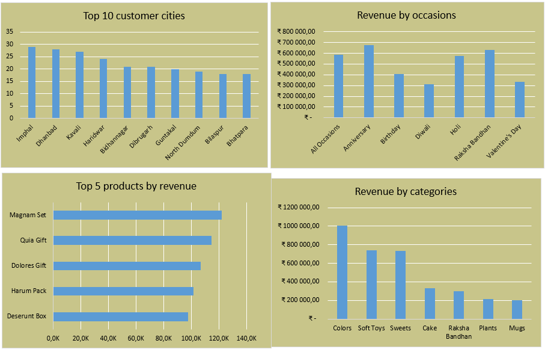
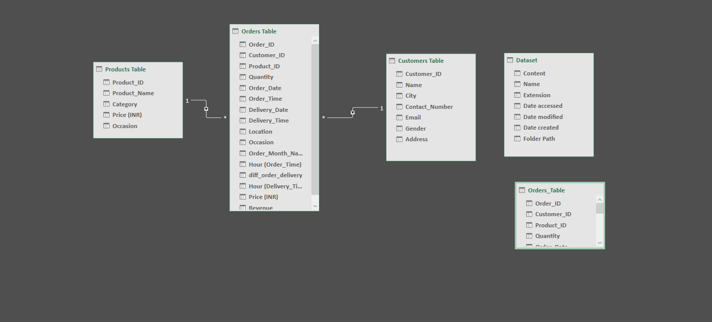

Excel Projects
Projects involving Excel data transformation, formulas, modelling, and interactive dashboard development.
Coffee Business Sales Analysis

Download the files
Coffee Excel Analysis Zip FilesThis project focuses on analysing sales performance and customer purchasing behaviour for a coffee shop business. The analysis explores coffee sales trends, roast type performance, customer purchasing patterns, and geographical sales distribution.
The objective was to transform raw transactional data into meaningful business insights through Excel calculations, formulas, and the development of an interactive Excel dashboard.
Credits for the dataset and project go to Mo Chen (YouTube Channel).
The data preparation process included:
- Checking for duplicate values (no duplicates were identified)
- Enhancing the orders table using VLOOKUP to retrieve customer names, emails, and country information
- Using INDEX and MATCH to retrieve coffee type, roast type, size, and unit price data
- Handling missing values in email fields using IF statements
- Calculating sales by multiplying unit price by quantity
- Creating full coffee type and roast type names using nested IF statements
- Retrieving loyalty card information using VLOOKUP
- Standardising data formatting, including date formats and currency formatting
- Adding “Kg” formatting to coffee size values
- Converting the dataset into an Excel Table for improved Pivot Table and dashboard usability
The interactive Excel dashboard was developed using slicers, pivot tables, and charts to enable dynamic analysis.
The dashboard includes:
- Timeline slicer for filtering orders by date
- Interactive slicers for roast type, coffee size, and loyalty card membership
- Sales trend analysis over time using line charts
- Top 5 customers based on total purchase value
- Sales performance comparison across countries
All slicers were connected across visualisations to enable fully interactive filtering and exploration of the dataset.
The dashboard was refined with formatting improvements to enhance clarity, readability, and overall presentation.
Key insights from the analysis included:
- Sales fluctuated between 2019–2022, suggesting seasonal patterns in customer demand
- The United States was the highest-performing market in terms of total sales
- A small group of customers contributed a large portion of total revenue, highlighting the importance of customer retention strategies
- Roast types showed varying performance trends, indicating differences in customer preferences
- Customer purchasing behaviour varied across coffee sizes, providing insight into product preferences
- Overall performance suggests opportunities to improve sales through targeted marketing and loyalty programmes
FNP Business Excel Data Analysis Project


Download the files
FNP Excel Analysis Zip FilesThis project focuses on analysing sales performance and customer behaviour for FNP (Ferns N Petals), a retail gifting company. The dataset contains information relating to products, orders, customers, and gifting occasions.
The analysis explores gift purchases made during important occasions in India, including Diwali, Valentine's Day, Birthdays, and Anniversaries. The objective was to transform raw transactional data into meaningful business insights using Excel data analysis tools.
Credits for the dataset and project inspiration go to "WsCube Tech! ENGLISH" (YouTube).
The project utilised the following tools:
- Microsoft Excel
- Power Query
- Power Pivot
- Excel Data Model
- Pivot Tables
- Slicers and Timelines

The data preparation process included:
- Importing data from multiple files containing products, orders, and customers
- Combining and transforming datasets using Power Query Editor
- Renaming tables and validating column data types
- Creating additional calculated columns in the orders table, including:
- Order month extraction from order date
- Order hour extraction from order time
- Delivery duration calculation in days
- Delivery hour extraction
- Merging the products table with the orders table to include product pricing information
- Loading the transformed dataset into Excel and adding it to the Excel Data Model
The data modelling and dashboard development process included:
- Creating relationships between tables using Power Pivot Diagram View
- Adding calculated columns within Power Pivot, including revenue calculations and day name extraction from order dates
- Developing an interactive dashboard using pivot charts, slicers, and timelines
- Adding filters for occasions and time periods to allow dynamic exploration of business performance
The final dashboard allows users to analyse sales performance across different occasions, products, locations, and time periods.
Key insights from the analysis included:
- The business generated approximately ₹3.52M in total revenue, with an average customer spending of around ₹3.5K
- Revenue showed seasonal fluctuations, with stronger performance around February and August, while lower-performing periods included June and September
- Top revenue-generating products included Magnam Set, Orchid Set, and Dolcetto Gift, indicating strong customer demand
- Sales were distributed across multiple cities, with locations such as Indore and Dhanbad contributing strongly
- Occasion-based analysis showed significant revenue contributions from Anniversaries, Raksha Bandhan, and Birthdays
- Categories such as Colours, Soft Toys, and Sweets performed strongly, highlighting popular customer preferences
Business opportunities identified include improving revenue consistency by focusing marketing efforts on high-performing occasions, products, and categories while developing strategies to increase sales during lower-performing periods.